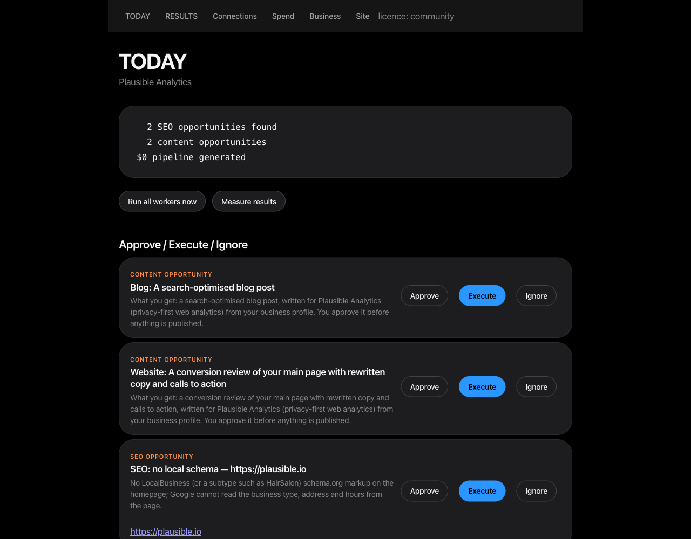
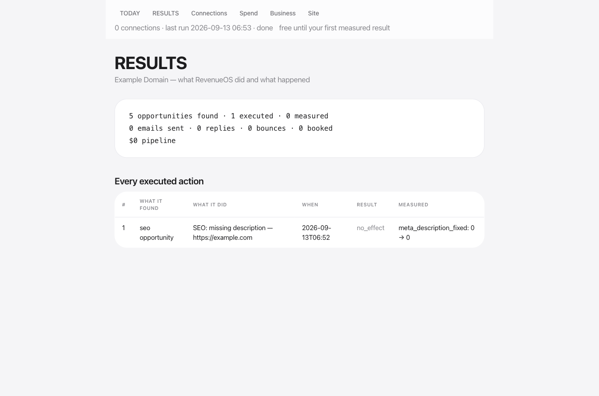
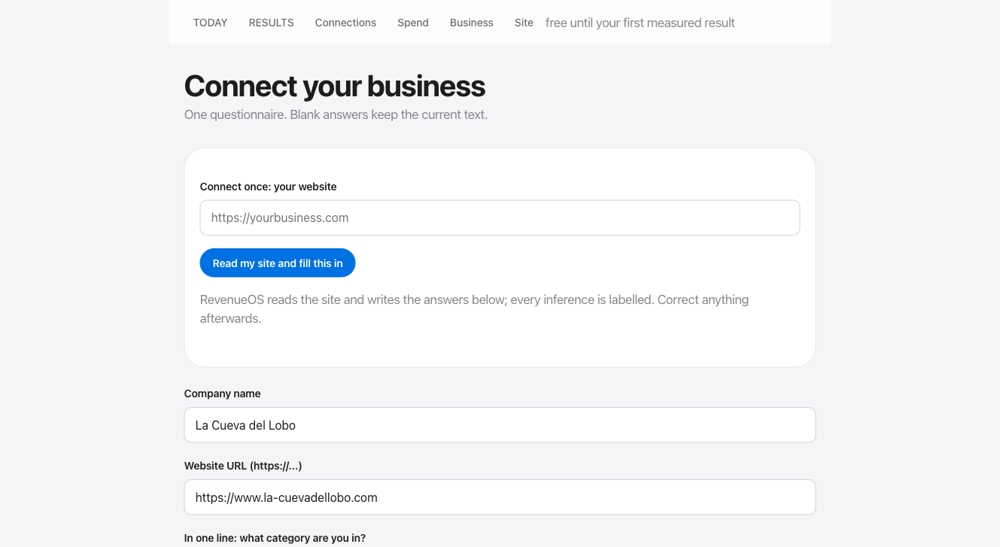

Connect once. Everything runs free.
Pay when you agree with the result.
RevenueOS reads your website, ads, leads and mailbox, lists what is costing you customers, fixes what you approve, and proves the change before you pay anything.
uvx revenueos demo https://yoursite.com
Last verified run: 2026-09-13 · two site fixes deployed by the executor and measured 0 → 1 · 210 tests passing · the record
Connect once. Act after your yes.
One real run, on a real business
Not a mock-up. This is what revenueos today and
revenueos results showed after a live run against a real company's
public web presence.
TODAY — Plausible Analytics 2 SEO opportunities found 3 content opportunities $0 pipeline generated
RESULTS — Plausible Analytics 5 opportunities found · 1 executed · 1 measured ✓ [ 4] seo: seo-content-strategy deliverable_written 0 → 1


- ✓Date 2026-09-13.
- ✓Business Plausible Analytics (plausible.io) — a real company's public web presence, used read-only. No email was sent to anyone.
- ✓Found a real crawl of plausible.io, a Hacker News search through the relevance gate, and the content registry matched against the business's channels together produced 5 opportunities — two SEO, three content.
- ✓Executed 1 — Claude ran the vendored
seo-content-strategyskill and wrote the deliverable. - ✓Measured
deliverable_written 0 → 1— what RevenueOS can observe for a content action without Search Console connected.
What's honest about these numbers
- ✓The crawl found no defects on plausible.io — every page already had a title, description and body text — so no SEO fix opportunity was fabricated to fill the brief.
- ✓The free authority-comparison endpoint returned HTTP 403 during this run and was reported as unavailable, not guessed.
- ✓The Claude relevance gate rejected all 3 Hacker News candidates it considered — nothing was surfaced just to look busy.
- ✓$0 pipeline generated is true: no lead was contacted on this run. The pipeline number only moves when the outreach loop runs with a real mailbox connected.
Read the full command transcript → · docs/proof.md on GitHub
Connect → Discover → Approve → Execute → Measure
One loop, running on your schedule. Every step writes to one place; nothing skips the approval step.
Fixes, not suggestions — and never without your yes. Everything runs free; you pay after the first measured result you agreed with.
Six screens. That is the whole product.

Every screenshot is the real product running on the neutral example domain (example.com), captured 2026-09-13. Nothing here is mocked.
Eleven workers on a schedule. One list you decide from.
Schedules are the shipped defaults (data/automations.json). Every run writes to TODAY; nothing sends, publishes or spends without your approval.
Day by day, not a feature list.
Give it your website. It reads the site, fills in your business profile and labels every guess. Add Stripe, your site's repo or WordPress, Google or Meta when you want more done.
Every page crawled, the homepage read for tappable phones, LocalBusiness schema, canonical, titles, descriptions, sitemap; ad exports or connected accounts run through the 414-control catalogue. Findings land on TODAY with Approve / Execute / Ignore.
Each approved fix is deployed by RevenueOS itself where it can (git-hosted sites, WordPress) or handed to you as an exact change. Then it re-checks the live page and writes before → after next to the action.
Workers run on a schedule, prospects with live ad spend are found from public data, drafts wait for your read, wasting campaigns are queued to pause. revenueos next ranks what to do from what actually worked.
Nothing is charged until RESULTS shows a measured change you approved. Then 14 more days free, then $99/month to keep it running continuously. One-shot runs and the panel never lock.
Free to run. Simple to grow.
RevenueOS is self-hosted software — you always own the install. Paid tiers unlock capability via a signed licence key issued after checkout.
- Manual runs of every worker
- The daily brief, locally
- The full skill catalogue
- Continuous operation via the orchestrator
- Advanced audits & automated monitoring
- Historical reporting & persistent memory
- Multi-brand workspaces & multiple users
- CRM synchronization
- Approval controls & centralized analytics
- Multi-client account fleets
- White-label reports & client workspaces
- Full API access
revenueos workspace new), but fleets, white-label reports and a documented API do
not exist yet and nothing in the software gates them.Run it yourself, today
No account required for Community. Install it, connect your business.
# install uvx revenueos demo https://yoursite.com # nothing installed, one command pip install revenueos # or: uv tool install revenueos — to keep it # connect your business and turn it on revenueos init # the questionnaire → company-context/ + revenueos.yaml revenueos run all # run every worker once revenueos today # the brief revenueos serve # the control panel: http://127.0.0.1:8791
From source: git clone https://github.com/unempyd/revenueos && cd revenueos && uv sync
&& (cd orchestrator && npm install), then run the same
commands with uv run in front. Optional: ANTHROPIC_API_KEY
(or ant auth login) turns on the LLM paths — relevance gating,
personalised openers, running skills — without it every worker still runs
deterministically. SMTP_PASSWORD + smtp.host in
revenueos.yaml enables real sending; REVENUEOS_DRY_RUN=1 writes
emails to data/outputs/ instead. Already have a licence key? Run
revenueos license install <key>.
Built in the open
RevenueOS is MIT-licensed. It includes permissively-licensed
open-source components, with full attribution for every one of them — upstream
repository, commit and licence — recorded in NOTICE.md. RevenueOS
never bundles copyleft code into the licensed product; where a copyleft component is
used at all, it runs as an external service across a process boundary, not inside
the product itself.
This isn't a from-scratch rewrite dressed up as one — it's glue code, business context, approval and measurement logic built new, over components whose licences allow exactly this kind of reuse.